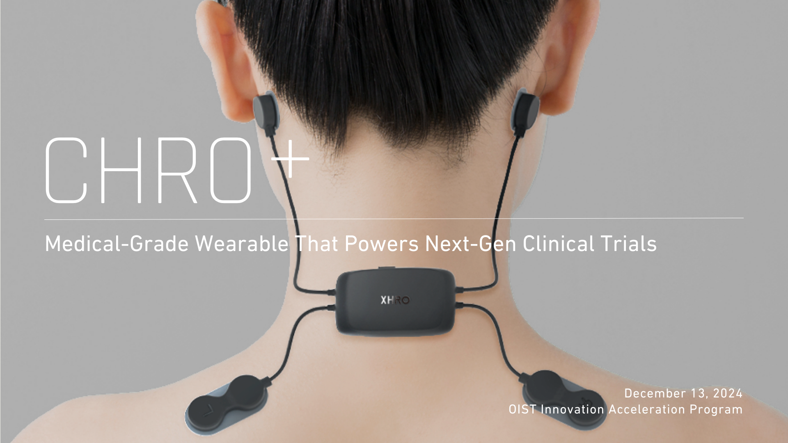
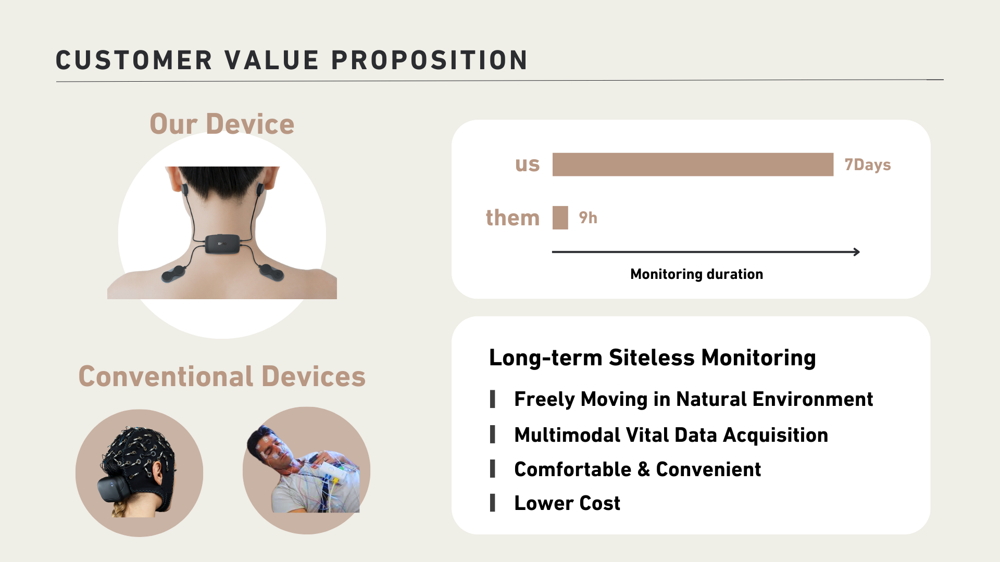
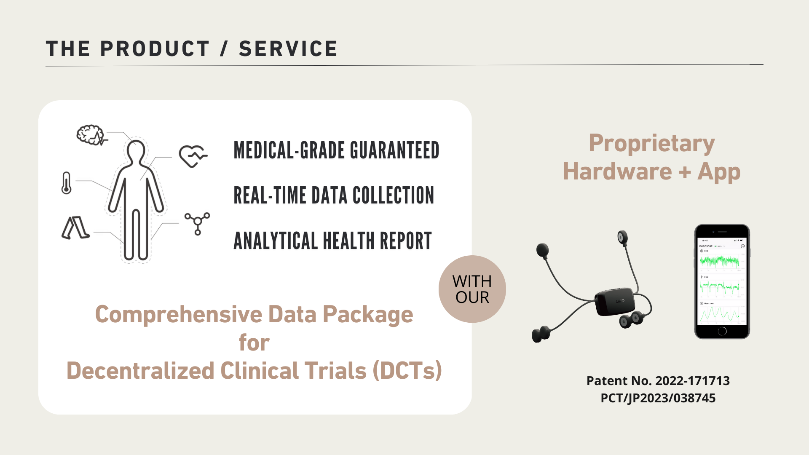
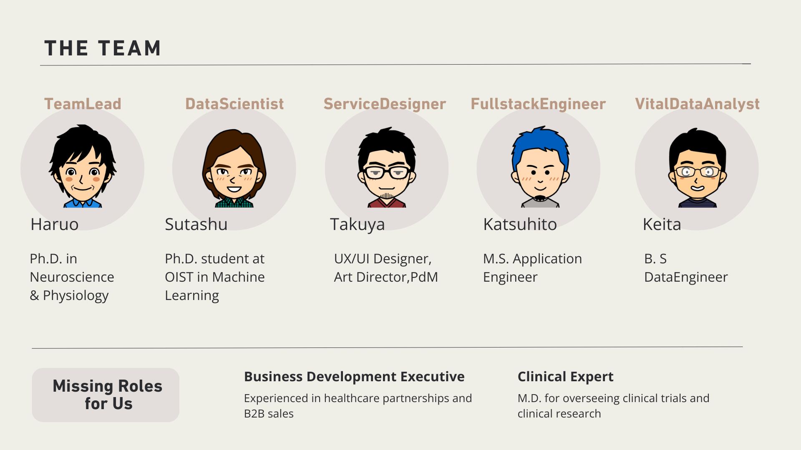

CHRO+
未来を切り拓く医療グレードのウェアラブルデバイス
概要
CHRO+は、臨床試験の効率を劇的に向上させる医療グレードのウェアラブルデバイスを提供します。このデバイスは7日間連続のモニタリングをサポートし、自然な環境で自由に動くことが可能です。

- 市場規模 (TAM): 1845億ドル (2030年予測)
- 成長率: 年平均成長率19.5% (2023-2030)
- 目標: 分散型臨床試験 (DCT) のリーダーシップを確立
製品
私たちのウェアラブルデバイスは以下の特徴を備えています:

- 7日間連続データ記録
- 多モーダルデータ取得 (EEG, ECG, バイオインピーダンスなど)
- 快適で長期間の装着が可能
- 自由な動作を妨げない設計
サービス
CHRO+は包括的なデータ収集と解析サービスを提供します:

- データ収集から解析までのエンドツーエンドソリューション
- 分散型臨床試験設計のサポート
- 正確なデータレポート作成
チーム
私たちのチームは、OISTや医療業界で豊富な経験を持つ専門家で構成されています:

- Haruo Mizutani (Ph.D. at UTokyo in Neuroscience& Physiology)
- Sutashu (Ph.D. student at OIST in Machine Learning)
- Takuya Abe (UX/UI Designer,Art Director,PdM)